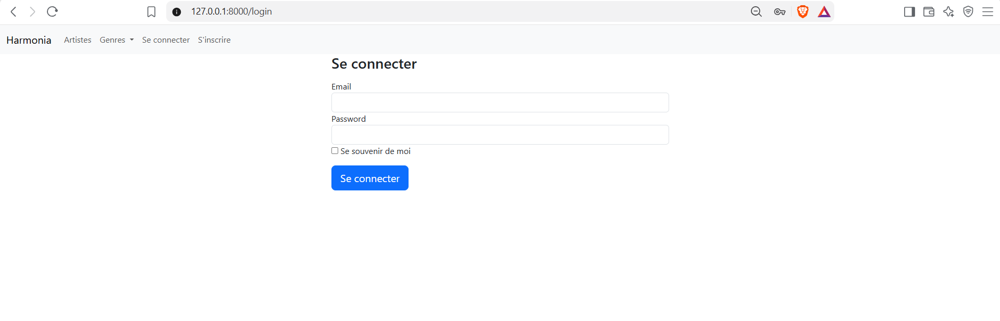
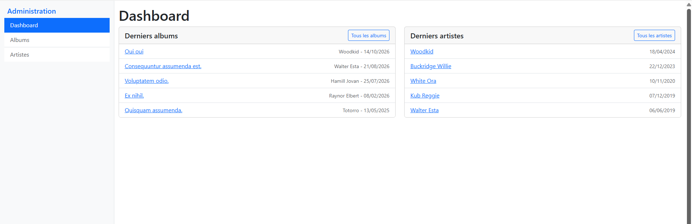

Présentation
Harmonia est une plateforme de streaming musical pour un label indépendant : catalogue d’albums et de morceaux, fiches artistes, classement par genres, playlists personnelles, favoris et historique d’écoute. Le projet est une application Symfony complète, rendue côté serveur avec Twig, développée en cinq jours — de la modélisation des entités jusqu’au back-office et aux interactions sans rechargement.
Stack technique
- Back : PHP 8.4, Symfony 8.1, Doctrine ORM 3.7, MariaDB
- Front : Twig, Bootstrap 5, AssetMapper (importmap, sans bundler), JavaScript natif (
fetch) - Sécurité : SecurityBundle, authenticator personnalisé, hachage automatique des mots de passe, protection CSRF sans état
- Outils : Doctrine Migrations, Foundry (jeux de données), profiler Symfony, phpMyAdmin, Git/GitHub
Modélisation et relations
J’ai modélisé huit entités — User, Artist, Album, Track, Genre, Playlist, Favorite, ListeningHistory — et fait évoluer le schéma par migrations versionnées. Deux choix de modélisation méritent d’être détaillés, parce qu’ils ne vont pas de soi :
- L’historique d’écoute ne pouvait pas être un simple ManyToMany : un même utilisateur écoute plusieurs fois le même morceau, et chaque écoute doit être horodatée. Une table de liaison ne permet de stocker qu’une seule association ; j’en ai donc fait une entité à part entière, porteuse de sa propre date.
- Les favoris suivent la même logique : modélisés comme entité dédiée (utilisateur, morceau, date d’ajout) plutôt qu’en relation directe, ce qui permet de savoir quand un morceau a été mis en favori.
Le type d’album (album, EP, single) est une énumération PHP typée, mappée en base par Doctrine : les valeurs possibles sont garanties par le langage lui-même, pas par une convention. Les suppressions en cascade sont déclarées au niveau du mapping : supprimer un artiste retire ses albums, leurs morceaux, et les favoris et écoutes qui s’y rattachent, sans laisser de références orphelines.
Architecture et organisation du code
J’ai réparti les responsabilités selon le découpage Symfony :
- Entités : la structure des données et leurs relations, décrites par attributs PHP
- Repositories : tout l’accès en lecture, y compris les requêtes personnalisées écrites en DQL avec le QueryBuilder
- Contrôleurs : fins, ils coordonnent et délèguent
- Formulaires : la saisie et sa validation, isolées dans des classes dédiées
- Templates Twig : l’affichage seul
Côté templates, j’ai factorisé ce qui se répétait : un gabarit de base dont toutes les pages héritent, et des composants inclus pour la carte d’album et les sections du catalogue. Les composants sont inclus en contexte isolé, de sorte qu’ils déclarent explicitement ce dont ils ont besoin au lieu de dépendre des variables de la page appelante.
La liste des genres affichée dans la navigation posait un problème transverse : chaque contrôleur devait penser à la transmettre, sous peine de casser le menu. Je l’ai sortie dans une extension Twig — une fonction appelée directement depuis le gabarit, qui interroge le repository à la demande. Une vingtaine de méthodes de contrôleur s’en trouvent allégées.
Formulaires et validation
Chaque entité dispose de son formulaire. Deux cas ont demandé plus qu’une déclaration de champs :
- L’upload de pochette : le fichier n’est pas une propriété de l’entité, il est traité à part, contraint en taille et en type MIME, renommé puis déplacé, et seul son chemin est stocké. Le même formulaire sert à la création et à la modification, avec une option qui rend la pochette obligatoire uniquement à la création.
- Les formulaires de suppression : construits sur une liste déroulante alimentée par les entités existantes, avec filtrage selon l’utilisateur connecté pour les playlists — on ne peut supprimer que les siennes.
Authentification et sécurité
- Authenticator personnalisé, mots de passe hachés automatiquement par Symfony, jamais manipulés en clair
- Connexion persistante par cookie signé (« se souvenir de moi »)
- Protection CSRF sans état : le jeton est comparé à un cookie déposé côté client, sans rien stocker en session, ce qui évite d’occuper la mémoire serveur et reste compatible avec le cache HTTP
- Affichage conditionné à l’authentification : les actions d’édition et les favoris n’apparaissent qu’aux utilisateurs connectés, et les contrôleurs le vérifient côté serveur plutôt que de se fier au template
Interactions sans rechargement
Deux fonctionnalités passent par des requêtes asynchrones, avec des routes limitées au verbe POST qui répondent en JSON :
- Le bouton favori bascule l’état en base et renvoie le nouvel état ; le JavaScript met à jour le libellé et la couleur du bouton sur place.
- Le bouton d’écoute incrémente le compteur global du morceau et enregistre une ligne d’historique pour l’utilisateur connecté. La réponse porte le nouveau compteur et la date d’écoute, que le script injecte dans la ligne concernée — en remontant du bouton cliqué jusqu’à son conteneur, pour viser le bon morceau parmi la centaine affichée.
Les deux écritures en base sont envoyées en une seule transaction, l’accumulation des changements étant gérée par Doctrine.